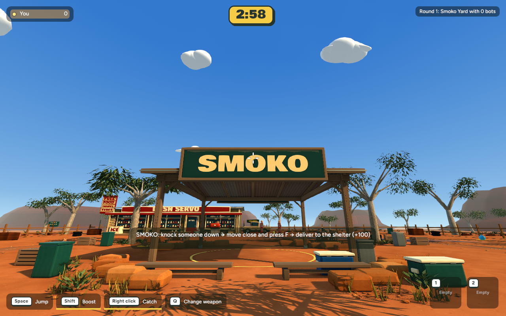
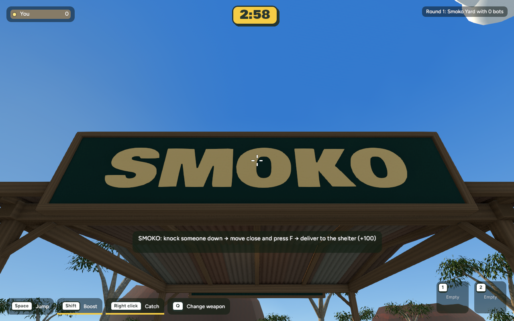
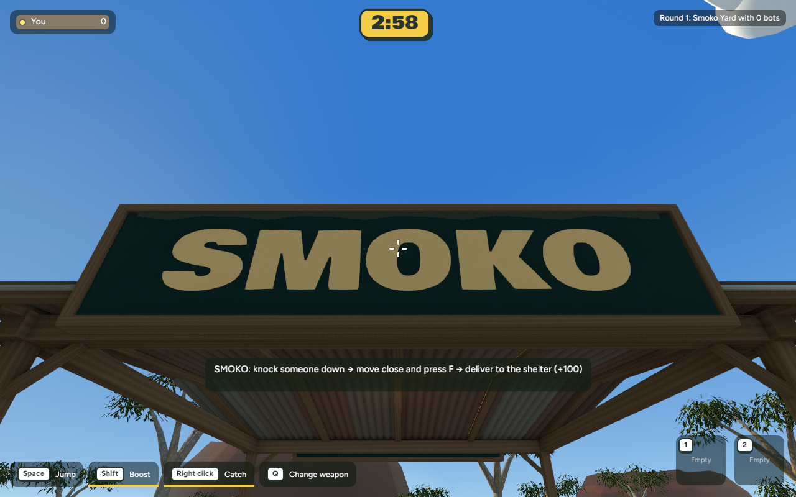
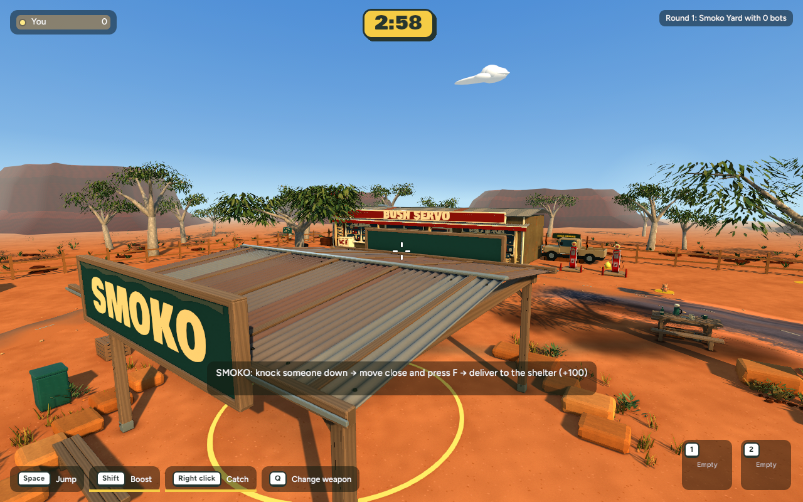

Standing distance



Matched native-game captures, before and after. The finish adds a narrow galvanized edge at the roof eaves and irregular, softly faded paint just below the sign’s top frame. The lettering stays clean; the existing wider sign, timber grain and shelter shape are preserved.




Each native capture uses the same 1280×800 view and a 600-frame timing sample after 300 warm-up frames. The samples are a local smoke check, not a performance claim. Review source and rollback details in CHECKPOINT.md.